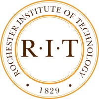

Education:
-

General Assembly, Boston, MA
Web Development Immersive Course
2014 -
University of California, Irvine, CA
Master of Science (M.Sc.), Biotechnology
2009-2011 -

Rochester Institute of Technology, Rochester, NY
Bachelor of Science (B.S.), Biotechnology
2005-2009